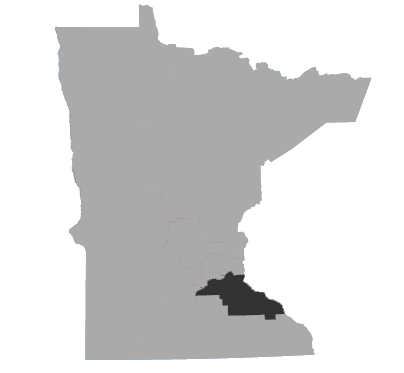
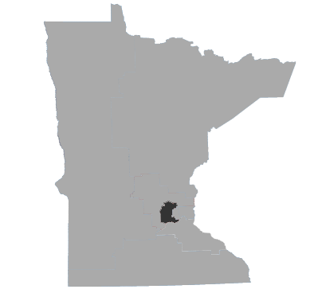
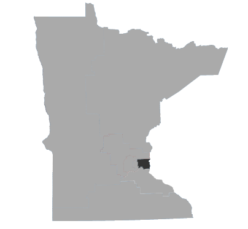
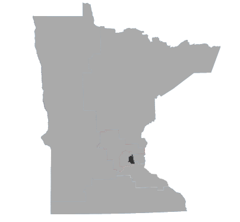
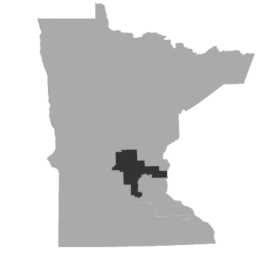
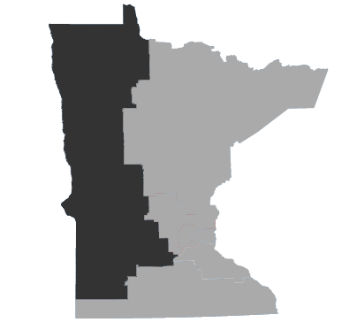
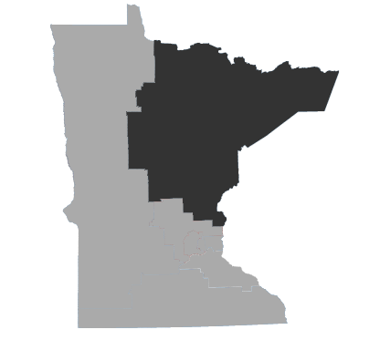

Minnesota accounts for just eight of the nation's House districts, but a few are pretty competitive this year, including races in CD2, CD3 and CD8.
To measure how they lean, one way is to use their Cook Partisan Voter Index (CPVI or PVI), which is how Democrat or Republican a state or district is by comparing a party's voting percentage to the national average from the past two presidential elections. The Cook Political Report assigns ranks according to these scores to describe how a district leans politically. The following is how Minnesota's congressional districts rank.
How a district otherwise leans doesn't always match with the party of its representive, but can be an indicator of whether a seat could be vulnerable to flipping control between parties. The least competitive districts have high CPVI scores for an incumbent candidate's party. For instance, Keith Ellison in CD5 and Tom Emmer in CD6 are in districts with high CPVI scores for Democrats and Republicans, respectively.
Rep. Tim Walz (D)
Minnesota's Congressional District 1 is represented by Democrat Tim Walz, who has served 5 terms in office.
He is running against Republican Jim Hagedorn.

The district has a median income of $57,321 and has a minority population of 8 percent, compared to 19% of the state as a whole. About 16 percent of the district's residents are age 65 and older, compared to 14 percent statwide. Roughly 27 percent have Bachelor's Degrees or higher, compared to about 33 percent throughout Minnesota.
The district's current Cook Partisan Voting Index score (CPVI) is R+2, ranking it as Barely Republican. In 2012, the district voted Barack Obama (D) for president.
CPVI score over time
Campaign finance
Open Seat
Minnesota's Congressional District 2 is an open seat this year following the retirement of Republican John Kline, who served 7 terms in office.
Republican Jason Lewis and Democrat Angie Craig are facing off to fill this vacancy.
It has a median income of $76,409 and has a minority population of 15 percent, compared to 19% of the state as a whole. About 12 percent of the district's residents are age 65 and older, compared to 14 percent statwide. Roughly 38 percent have Bachelor's Degrees or higher, compared to about 33 percent throughout Minnesota.
The district's current Cook Partisan Voting Index score (CPVI) is R+1, ranking it as Barely Republican. In 2012, the district voted Barack Obama (D) for president.
CPVI score over time
Campaign finance
Rep. Erik Paulsen (R)
Minnesota's Congressional District 3 is represented by Republican Erik Paulsen, who has served 4 terms in office.
He is running against Democrat Terri Bonoff.
The district has a median income of $79,965 and has a minority population of 19 percent, compared to 19% of the state as a whole. About 14 percent of the district's residents are age 65 and older, compared to 14 percent statwide. Roughly 48 percent have Bachelor's Degrees or higher, compared to about 33 percent throughout Minnesota.
The district's current Cook Partisan Voting Index score (CPVI) is R+2, ranking it as Barely Republican. In 2012, the district voted Barack Obama (D) for president.
CPVI score over time
Campaign finance
Rep. Betty McCollum (D)
Minnesota's Congressional District 4 is represented by Democrat Betty McCollum, who has served 8 terms in office.
She is running against Republican Greg Ryan.
The district has a median income of $61,244 and has a minority population of 28 percent, compared to 19% of the state as a whole. About 13 percent of the district's residents are age 65 and older, compared to 14 percent statwide. Roughly 43 percent have Bachelor's Degrees or higher, compared to about 33 percent throughout Minnesota.
The district's current Cook Partisan Voting Index score (CPVI) is D+11, ranking it as Strongly Democrat. In 2012, the district voted Barack Obama (D) for president.
CPVI score over time
Campaign finance
Rep. Keith Ellison (D)
Minnesota's Congressional District 5 is represented by Democrat Keith Ellison, who has served 5 terms in office.
He is running against Republican Frank Drake.
The district has a median income of $52,447 and has a minority population of 31 percent, compared to 19% of the state as a whole. About 11 percent of the district's residents are age 65 and older, compared to 14 percent statwide. Roughly 44 percent have Bachelor's Degrees or higher, compared to about 33 percent throughout Minnesota.
The district's current Cook Partisan Voting Index score (CPVI) is D+22, ranking it as Strongly Democrat. In 2012, the district voted Barack Obama (D) for president.
CPVI score over time
Campaign finance
Rep. Tom Emmer (R)
Minnesota's Congressional District 6 is represented by Republican Tom Emmer, who has served 1 term in office.
He is running against Democrat David Snyder.
The district has a median income of $71,604 and has a minority population of 8 percent, compared to 19% of the state as a whole. About 10 percent of the district's residents are age 65 and older, compared to 14 percent statwide. Roughly 30 percent have Bachelor's Degrees or higher, compared to about 33 percent throughout Minnesota.
The district's current Cook Partisan Voting Index score (CPVI) is R+10, ranking it as Strongly Republican. In 2012, the district voted Mitt Romney (R) for president.
CPVI score over time
Campaign finance
Rep. Collin Peterson (D)
Minnesota's Congressional District 7 is represented by Democrat Collin Peterson, who has served 13 terms in office.
He is running against Republican Dave Hughes.
The district has a median income of $51,880 and has a minority population of 7 percent, compared to 19% of the state as a whole. About 18 percent of the district's residents are age 65 and older, compared to 14 percent statwide. Roughly 21 percent have Bachelor's Degrees or higher, compared to about 33 percent throughout Minnesota.
The district's current Cook Partisan Voting Index score (CPVI) is R+6, ranking it as Strongly Republican. In 2012, the district voted Mitt Romney (R) for president.
CPVI score over time
Campaign finance
Rep. Rick Nolan (D)
Minnesota's Congressional District 8 is represented by Democrat Rick Nolan, who has served 2 terms in office.
He is running against Republican Stewart Mills in a rematch from 2014.
The district has a median income of $51,322 and has a minority population of 7 percent, compared to 19% of the state as a whole. About 18 percent of the district's residents are age 65 and older, compared to 14 percent statwide. Roughly 23 percent have Bachelor's Degrees or higher, compared to about 33 percent throughout Minnesota.
The district's current Cook Partisan Voting Index score (CPVI) is D+1, ranking it as Barely Democrat. In 2012, the district voted Barack Obama (D) for president.